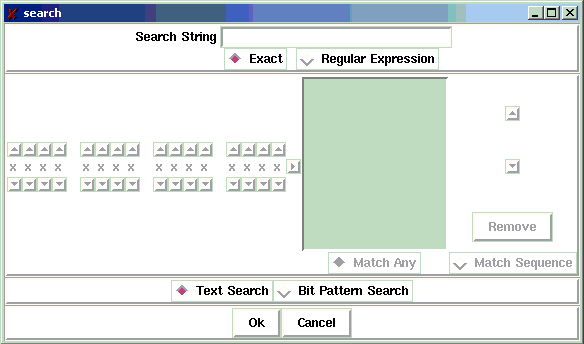
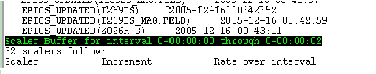
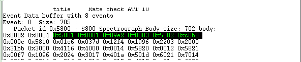

Filter->Search
The Filter->Search command creates a
Search Pattern and searches for the first instance of that pattern
within the data buffers dumped so far. If found, the data are highlighted
and scrolled into view.
Search patterns are specified via the search dialog box that is displayed
by the Filter->Search command (Note that Control-F is a
shortcut for this menu command).
This dialog is shown below:

The dialog is divided into several vertical frames:
- The top frame allows you to specify a textual search.
The Text Search radio button must be selected to
enable this section of the dialog.
- Enter the search string in the text entry.
- Select exact or regular expression matching from the
radio buttons below the search string.
The syntax of regular expressions is powerful, complex
and beyond the scope of this document. For information
about regular expressions, see the regex(7) man page on
the Linux systems, or read the sections describing the
regexp command in Tcl books.
- The second frame from the top allows you to edit bit pattern searches.
This is enabled only if the Bit Pattern radio button
is selected.
- The row of 'x's at the left of this part of the dialog
represent the 16 bits of a binary word. Use the up and down arrow keys
to select the desired state for each bit or leave a bit at 'x' if you
don't care about its state.
- Once you have edited a bit pattern, add it to the pattern list by
clicking the right arrow button just to the right of the bit pattern.
- You can remove a bit pattern you no longer want from the list by
selecting it and clicking the Remove button at the right of the list.
- You can re-order a bit pattern upwards or downwards by selecting it
and clicking either the up or down arrow buttons to the right of the
list. Note that order is only important for bit sequence matches
- Select the Match Any radio button to specify a match on
any of the patterns in the box. Select the Match Sequence
radio button to specify a match on the ordered sequence of bit
patterns specified in the list box.
- The next to the bottom frame in the dialog specifies the type of
search you wish to perform and enables the appropriate search
specification frame. Select Text Search to search for
text strings or regular expression matches. Select Bit Pattern Search
to search for bit patterns or sequences of bit patterns.
- The bottom most frame of the dialog provides two buttons:
- Clicking Ok establishes the new search pattern
and performs the search.
- Clicking Cancel dismisses the search dialog witout
doing anything
Sample matches
When a search is successful, you will be scrolled to the matching
section of the buffer display and the first part of the match will be
highlighted. The image below shows the results of a textual search for
the string "Scaler":

The image below shows the results of a match on the bit pattern sequence
0101 1000 xxxx xxxx, 0000 0000 0000 0001 :

Note how the "don't care" lower bits of the bit pattern allow 0x5801 to match
the first bitmask of the pattern, and that the requirement that the first bit
pattern be followed by the exact bits
0000 0000 0000 0001
makes a
match on the 0x5800 packet id of the S800 Spectrograph packet fail.
Please report all errors to http://daqbugs.nscl.msu.edu